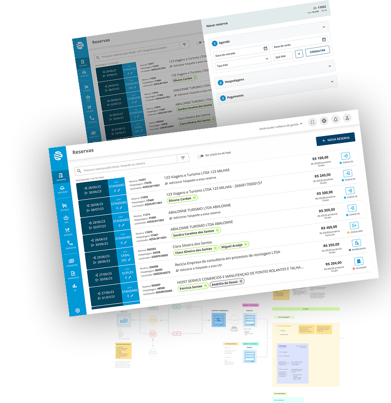
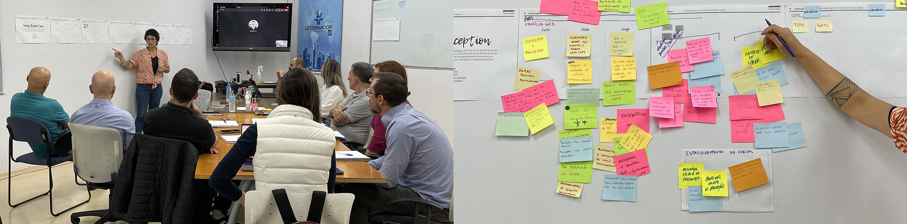
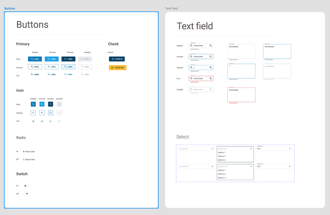
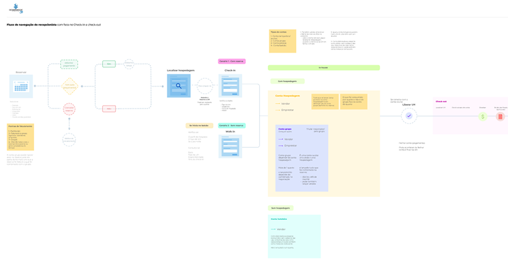
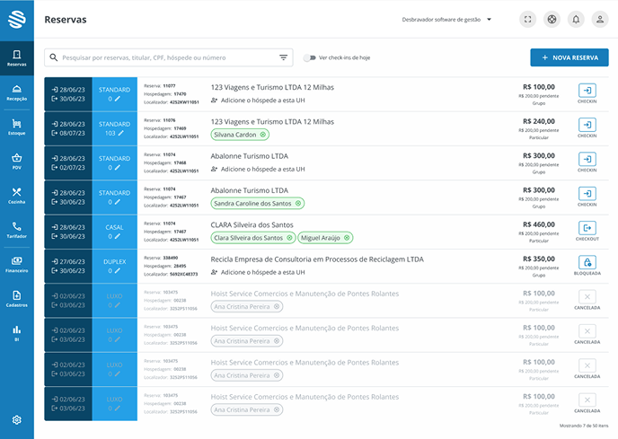
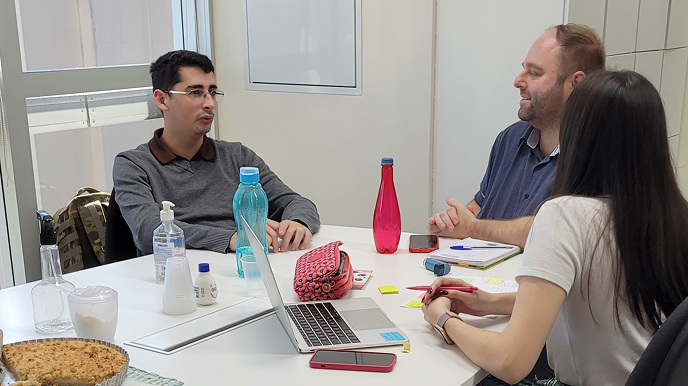

Faltavam legendas e indicações claras de unidades habitacionais livres ou ocupadas.
← Todos os cases
PRODUCT STRATEGY
UX RESEARCH
PRODUCT DESIGN
DESIGN MANAGEMENT
Modernizar a plataforma sem virar a experiência de toda a base de uma vez
A Desbravador estava evoluindo de um sistema desktop para uma plataforma web responsiva, SaaS e com contratação self-service. Apoiei essa transformação com pesquisa, evolução de funcionalidades do Light Web, criação de padrões de Design e fortalecimento da capacidade interna da equipe.

O CONTEXTO
Uma nova plataforma para uma operação construída ao longo de décadas
A Desbravador desenvolve software para gestão hoteleira desde 1988. O Light Web foi lançado em 2016 como uma solução online para hotéis de pequeno e médio porte, pousadas e albergues.
A evolução para web trazia uma oportunidade importante e um desafio: criar uma experiência mais atual sem desconsiderar hábitos, processos e necessidades de uma base de clientes consolidada.
3.500+clientes
10países
Indicadores registrados no material do projeto em 2023.
03 · PESQUISA E DIAGNÓSTICO
Entender o trabalho real antes de redesenhar o fluxo
Trabalhei com diferentes áreas da Desbravador, orientei o mapeamento de funcionalidades e processos, investiguei a jornada do recepcionista e preparei testes de usabilidade com protótipo navegável.
O plano de pesquisa contou com 14 participantes: 3 usuários internos e 11 externos. As tarefas incluíam check-in, cadastro de hóspedes, check-out e edição ou cadastro de reservas.

PRINCIPAIS PROBLEMAS IDENTIFICADOS NA PESQUISA
01
02
03
04
Os feedbacks de erro e os padrões de modal eram inconsistentes.
A avaliação não encontrou documentação de ajuda relacionada ao sistema.
O treinamento levantou dúvidas sobre os estados online e offline e sobre a autonomia disponível para o usuário.
04 · A VIRADA ESTRATÉGICA
Como evoluir a plataforma sem aumentar o risco de rejeição?
A pesquisa e o trabalho com a equipe ajudaram a trazer a transformação para o nível da operação, das decisões e da adoção. Um aprendizado importante foi perceber que as métricas precisavam ser interpretadas em conjunto: mais tempo em uma tarefa, por exemplo, poderia indicar exploração da nova ferramenta, e não necessariamente dificuldade.
O projeto também evidenciou a importância de envolver quem toma as decisões desde o início. Mudanças de direção que chegam por múltiplos níveis podem gerar novas iterações e retrabalho.
02 · SOLUÇÃO
Evoluir o produto e deixar capacidade para a equipe continuar
A solução combinou evolução de funcionalidades do Light Web com padrões e processos para apoiar a continuidade do trabalho dentro da Desbravador.
01
Design System
Organização de padrões e componentes para apoiar consistência e evolução do produto.

02
Fluxo de reserva
Desenho e aprimoramento de uma funcionalidade central da plataforma.

03
Jornada de check-in e check-out
Imersão, mapeamento de funcionalidades e fluxos, wireframes, protótipo navegável e testes de usabilidade para orientar a evolução da experiência.

04
Estruturação da equipe de Design
Organização de processos, pesquisas, protótipos e aprendizados para apoiar a continuidade do trabalho dentro da Desbravador.

04 · RESULTADOS
Uma visão mais completa para acompanhar a transição
Minha atuação contribuiu para ampliar a discussão sobre o sucesso da migração: além do churn, considerar a adoção da plataforma e a retenção de clientes.
Ao longo de aproximadamente seis meses, produzi pesquisas, protótipos, processos, padrões de Design e trabalho sobre fluxos do Light Web.
Os resultados quantitativos de churn, adoção, retenção ou satisfação foram acompanhados pela equipe interna estruturada para dar continuidade ao trabalho de Design.
05 · APRENDIZADO
Evoluir a tecnologia também exige entender como as pessoas mudam junto com ela
- A migração de um sistema legado precisa considerar hábitos e jornadas já estabelecidos.
- Churn, adoção e retenção são partes diferentes da leitura de uma transição.
- Métricas precisam ser interpretadas no contexto de uso; mais tempo em uma tarefa pode refletir exploração da ferramenta.
- Envolver as lideranças e compreender como as decisões acontecem ajuda a reduzir mudanças tardias e retrabalho.
- Transferir processos e conhecimento para a equipe interna apoia a continuidade da evolução do produto.
Aplique esse processo na sua empresa, venha falar comigo.